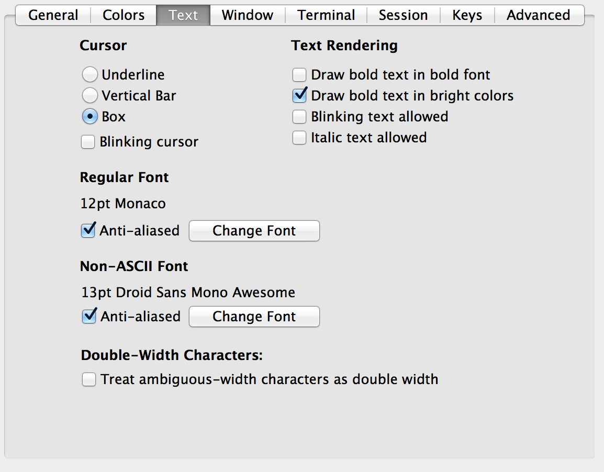
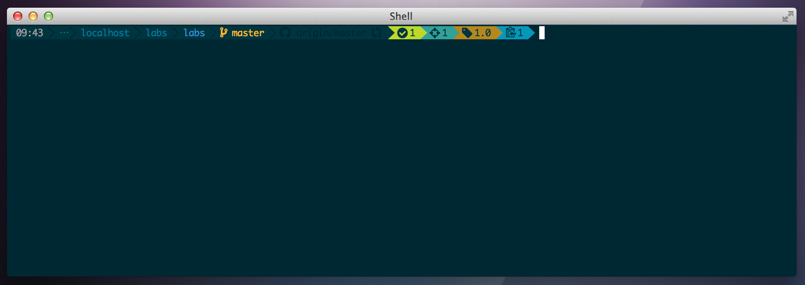

Powerline segment to replace the default git shell prompt
This project is maintained by guilu
Tampoco es que mate, verdad?...
Pues viendo por ahí diferentes opciones para mostrar la información del repositorio en el prompt, me topé con un par de proyectos interesantes, por un lado oh-my-git y por otro powerline (os recomiendo que les echéis un vistazo).
Después de escudriñar los entresijos de ambos, mi conclusión fué que el prompt de powerline (en concreto el segmento 'branch' que muestra información de la rama) es bonito pero se queda corto en información, y el prompt de oh-my-git ofrece mucha información pero no es lo bonito que me gustaría. Así que mi pensamiento fue: Y si me llevo la información que ofrece oh-my-git a un segmento (es como se llaman a los 'plugins') de powerline??
Dicho y hecho... He creado un segmento para personalizar el prompt de mi shell cuando entro a un repositorio de git.
Todo configurado y funcionando tiene un aspecto tal que así:
Desde el path en adelante se muestra la información del repositorio actual. El nombre de la rama, si hay cambios, ficheros sin trackear, eliminados y borrados, etc...
Voy a explicarlo un poco en la imagen:
Este proyecto es un segmento de powerline, así que lo primero que hay que tener instalado es el propio powerline, el repositorio oficial creo que es este:Lokaltog/powerline.
Hay muchísima documentación de como instalarlo y configurarlo, pero si no queréis pasar por eso, en resumidas cuentas lo que viene a decir es que tienes que tener python instalado (en los mac viene de casa) y que la manera más facil es instalarlo con pip....
instalar pip: Creo que easy_install viene por defecto también en los mac así que tendréis que hacer:
sudo easy_install pipUna vez instalado pip ya podeis pasar a instalar el proyecto, primero aseguraos de que tenéis las últimas setuptools
sudo pip install --upgrade setuptoolsEsto va a las librerias globales de python por eso otra vez con sudo... En el momento de escribir esto se me instalan las setuptools 1.4.2.
Ahora ya podéis pasar a instalar powerline
pip install --user git+git://github.com/Lokaltog/powerlineEsto hace que se instale a nivel de usuario desde git a la carpeta de paquetes de python: ~/Library/Python/2.7/lib/python/site-packages/powerline
Ahora hay que activar el prompt de powerline, modificando tu .bashrc o .bash_profile (yo uso bash, si usais otro shell supongo que será parecido) añadiendo la línea:
. ~/Library/Python/2.7/lib/python/site-packages/powerline/bindings/bash/powerline.shPerfecto! ya tienes el prompt de powerline instalado! Ahora hay que añadirle este segmento y personalizarlo.... vamos allá!!
Habiendo instalado pip, powerline y demás, este segmento se instala de la misma manera... super fácil:
pip install --user git+git://github.com/guilu/powerline-segment-ohmygitCon esto ya teneís instalado el segmento plohmygit y lo podéis referenciar desde los archivos de configuración. Vamos a ver como....
No hace falta modificar los ficheros de configuración de la carpeta ~/Library/Python/2.7/lib/python/site-packages/powerline/config_files/ sino que podemos copiar todos esos ficheros a ~/.config/powerline y allí modificar nuestras configuraciónes personalizadas...
cd ~/.config && mkdir powerline
cp -R ~/Library/Python/2.7/lib/python/site-packages/powerline/config_files/* ~/.config/powerline
Ahora si que tenemos podemos modificar a nuestro gusto los ficheros .json de configuracíon de powerline. La estructura del directorio es:
powerline/
├── colors.json
├── ...
├── colorschemes
│ ├── ...
│ ├── shell
│ │ ├── default.json
│ │ ├── diegobarrioh_monokai.json
│ │ ├── diegobarrioh_solarized.json
│ │ └── solarized.json
│ ├── ...
├── config.json
└── themes
├── ...
├── shell
│ ├── default.json
│ ├── default_leftonly.json
│ └── diegobarrioh_theme.json
├── ...
La configuración arranca con config.json donde debemos indicar que theme y colorscheme queremos usar para nuestro shell.
"shell": {
"colorscheme": "diegobarrioh_solarized",
"theme": "diegobarrioh_theme"
},
Como veis yo indico el colorscheme diegobarrioh_solarized.json (está en el repositorio pero no se instala con el comando pip, si lo queréis tenéis que bajarlo a manubrio) y lo mismo con el diegobarrioh_theme.json. En éste último es en el que se indica que queremos el segment plohmygit:
...
segments: {
"left": [
...
{
"module": "plohmygit.segment.plohmygit",
"name": "plohmygit",
"args": {
"use_path_separator": true
}
},
...
]
}
...
Lo que se ve en esta ventana: Aquí podeís ver el último commit de este tutorial (bueno, el penúltimo, el último será cuando suba esto que escribo ahora...) donde subo las imágenes y explicaciones. La rama gh-pages sale en naranja (sucia) y hay 5 ficheros staged (1 de ellos ha sido modificado). La rama tiene como upstream origin/gh-pages y el iconito a la derecha indica que al hacer push se va a hacer merge en lugar de rebase. Cuando hago el commit la rama queda limpia y 1 commit ahead de upstream (lista para hacer push). Meto la pata haciendo push y ese comando devuelve un error (el 128 en rojo que es el error del último comando ejecutado, otro segmento de powerline). El push correcto: g push origin gh-pages, sube todo bien y ya está publicado este tutorial...
Nota: hay algún detalle que me dejo en el tintero, como el uso de los símbolos, las fuentes parcheadas que hay que utilizar, la configuración del iTerm para que se vean bien, etc. Actualizaré esta información tan pronto como pueda... pero seguro que por vuestra cuenta, buscando en google y demás sois capaces de configurarlo todo y dejarlo aún más mejor que yo
Las fuentes parcheadas están en la carpeta [fonts](https://github.com/guilu/powerline-segment-ohmygit/tree/master/fonts). Tienes que descargarlas, instalarlas en tu equipo y seleccionarlas (por ejemplo en iTerm2) en las preferencias de texto de la aplicación:
He modificado los ficheros de configuración de los temas diegobarrioh_solarized.json & diegobarrioh_monokai.json así como diegobarrioh_theme.json, para que tenga esta apariencia....
